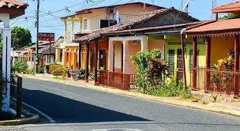

Latest News from The Preston Presser:
Officials say an electrical fault in a light fixture caused a house fire that killed twin 3-year-old Idaho boys:
The fire happened early Friday in the town of Weippe. By the time firefighters arrived the home was fully engulfed.
The mother of the children told investigators the twins were sleeping in the living room when she went to bed around midnight.
She woke up to smoke and alerted the father. They said they tried to rescue the children but was driven back by heavy smoke and heat.
The bodies of Shawn and John Carr were recovered after five hours of searching.
Power was cut on Thursday on the east side of Preston for 673 Pacificorp power customers.
During the outage, crews worked from 10 a.m. to 4 p.m., installing close to 20 new power poles in the area and performing maintenance on existing poles.
The timing of the maintenance, according to Pacificorp’s Preston Station operations manager, Rett Sage, was to coincide with the widening of East Oneida. “
Though maintenance work can be completed, in some instances, while power lines are still active, it is safer for linemen to cut the power to complete their work.
Extra crews from Montpelier and Lava Hot Springs came to the area to help complete the project.
Some poles were replaced with new raptor-safe poles which are designed to mitigate or eliminate electrocution of raptors that perch on the lines.